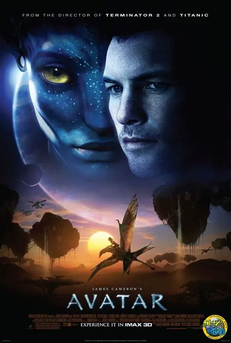

阿凡达
剧情简介
2154 年，地球人类远赴潘多拉星球开采珍稀矿产，与土著纳美人冲突不断。双腿瘫痪的海军陆战队员杰克通过"阿凡达"化身潜入纳美部落搜集情报，却在与公主奈蒂莉的相处中渐渐认同了这个与自然共生的族群。当推土机开向纳美人的家园之树时，杰克选择站到人类的对立面，带领纳美人为保卫家园而战。

2154 年，地球人类远赴潘多拉星球开采珍稀矿产，与土著纳美人冲突不断。双腿瘫痪的海军陆战队员杰克通过"阿凡达"化身潜入纳美部落搜集情报，却在与公主奈蒂莉的相处中渐渐认同了这个与自然共生的族群。当推土机开向纳美人的家园之树时，杰克选择站到人类的对立面，带领纳美人为保卫家园而战。